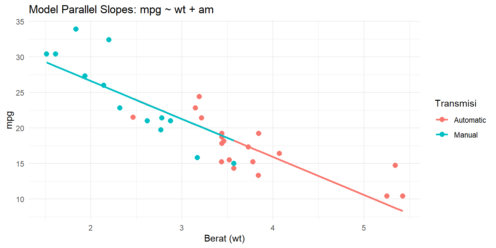
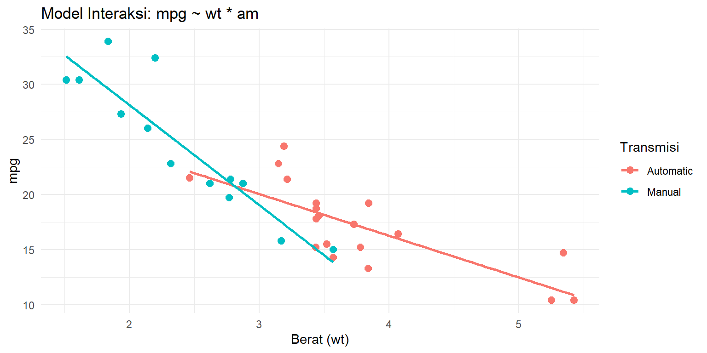
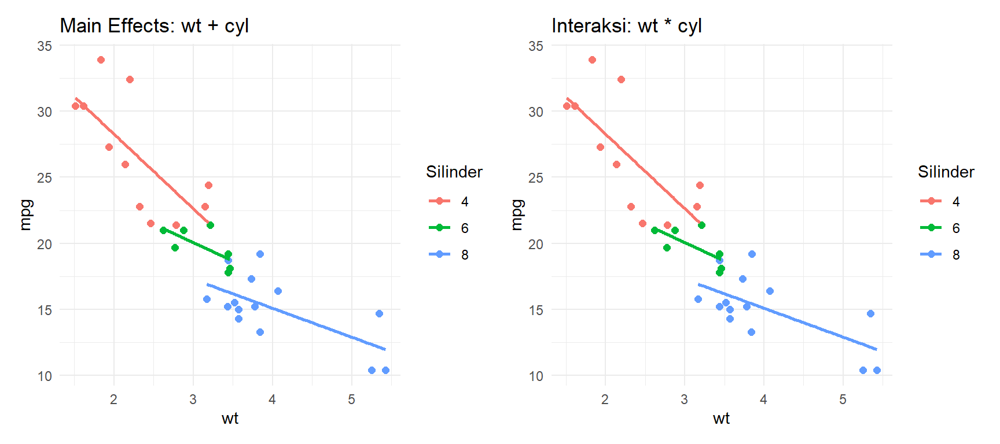

library(tidyverse)
library(patchwork)(Pertemuan 7) Variabel Kualitatif dalam Regresi Berganda
Dummy Variables, Main Effects, dan Interaksi Kuantitatif-Kualitatif
Kembali ke Model Linier
Pendahuluan
Sampai praktikum 6, semua prediktor yang kita pakai bersifat kuantitatif - angka yang bisa dioperasikan secara matematis seperti wt, hp, dan disp. Tapi di data nyata, banyak variabel yang bersifat kategorik: jenis bahan bakar, jenis transmisi, jenis kelamin, kota asal.
Variabel kategorik tidak bisa langsung dimasukkan ke model regresi sebagai angka mentah. Kalau kita kodekan Automatic = 1, Manual = 2, kita secara implisit bilang Manual “dua kali lebih besar” dari Automatic - yang tidak punya makna apapun. Solusinya adalah dummy variables (disebut juga indicator variables): variabel 0-1 yang merepresentasikan keanggotaan di suatu kategori (Mendenhall et al., 2011, Sec. 4.12 dan 5.7).
Package yang Dipakai
tidyverse: untuk wrangling dan visualisasi.patchwork: untuk menggabungkan beberapa plot sekaligus.
Data
Kita pakai mtcars dengan dua variabel kualitatif: am (transmisi: Automatic/Manual) dan cyl (jumlah silinder: 4, 6, 8 - diperlakukan sebagai kategorik di bagian akhir).
data(mtcars)
df <- mtcars
df$am <- factor(df$am, levels = c(0, 1), labels = c("Automatic", "Manual"))
df$cyl <- factor(df$cyl, levels = c(4, 6, 8))
str(df)'data.frame': 32 obs. of 11 variables:
$ mpg : num 21 21 22.8 21.4 18.7 18.1 14.3 24.4 22.8 19.2 ...
$ cyl : Factor w/ 3 levels "4","6","8": 2 2 1 2 3 2 3 1 1 2 ...
$ disp: num 160 160 108 258 360 ...
$ hp : num 110 110 93 110 175 105 245 62 95 123 ...
$ drat: num 3.9 3.9 3.85 3.08 3.15 2.76 3.21 3.69 3.92 3.92 ...
$ wt : num 2.62 2.88 2.32 3.21 3.44 ...
$ qsec: num 16.5 17 18.6 19.4 17 ...
$ vs : num 0 0 1 1 0 1 0 1 1 1 ...
$ am : Factor w/ 2 levels "Automatic","Manual": 2 2 2 1 1 1 1 1 1 1 ...
$ gear: num 4 4 4 3 3 3 3 4 4 4 ...
$ carb: num 4 4 1 1 2 1 4 2 2 4 ...Variabel Kualitatif dengan Dua Level
Konsep Dummy Variable
Untuk variabel dengan dua level (misalnya am: Automatic atau Manual), kita butuh satu dummy variable:
\[x_{am} = \begin{cases} 1 & \text{jika Manual} \\ 0 & \text{jika Automatic} \end{cases}\]
Level yang diberi nilai 0 disebut base level (level referensi). Semua interpretasi koefisien dilakukan relatif terhadap base level ini.
Kalau R sudah diset sebagai faktor, lm() otomatis membuat dummy variable. R selalu memilih level pertama secara alfabetis sebagai base level, kecuali kalau kita tentukan sendiri.
# Cek level yang dipakai R
levels(df$am)[1] "Automatic" "Manual" # "Automatic" = level pertama = base level
# "Manual" = level kedua = dikodekan 1Model 1: Hanya Variabel Kualitatif
m_am <- lm(mpg ~ am, data = df)
summary(m_am)
Call:
lm(formula = mpg ~ am, data = df)
Residuals:
Min 1Q Median 3Q Max
-9.3923 -3.0923 -0.2974 3.2439 9.5077
Coefficients:
Estimate Std. Error t value Pr(>|t|)
(Intercept) 17.147 1.125 15.247 1.13e-15 ***
amManual 7.245 1.764 4.106 0.000285 ***
---
Signif. codes: 0 '***' 0.001 '**' 0.01 '*' 0.05 '.' 0.1 ' ' 1
Residual standard error: 4.902 on 30 degrees of freedom
Multiple R-squared: 0.3598, Adjusted R-squared: 0.3385
F-statistic: 16.86 on 1 and 30 DF, p-value: 0.000285Interpretasi koefisien:
- \(\hat{\beta}_0\) = rata-rata
mpguntuk Automatic (base level) - \(\hat{\beta}_1\) = selisih rata-rata
mpgantara Manual dan Automatic
Jadi \(\hat{\beta}_0 + \hat{\beta}_1\) = rata-rata mpg untuk Manual.
# Verifikasi: bandingkan dengan rata-rata per grup
df %>%
group_by(am) %>%
summarise(mean_mpg = mean(mpg))# A tibble: 2 × 2
am mean_mpg
<fct> <dbl>
1 Automatic 17.1
2 Manual 24.4Nilai \(\hat{\beta}_0\) harus sama dengan rata-rata Automatic, dan \(\hat{\beta}_0 + \hat{\beta}_1\) harus sama dengan rata-rata Manual.
Model 2: Variabel Kualitatif + Kuantitatif (Parallel Slopes)
Model pertama terlalu sederhana karena tidak mempertimbangkan prediktor lain. Kita tambahkan wt:
\[E(y) = \beta_0 + \beta_1 x_{wt} + \beta_2 x_{am}\]
m_parallel <- lm(mpg ~ wt + am, data = df)
summary(m_parallel)
Call:
lm(formula = mpg ~ wt + am, data = df)
Residuals:
Min 1Q Median 3Q Max
-4.5295 -2.3619 -0.1317 1.4025 6.8782
Coefficients:
Estimate Std. Error t value Pr(>|t|)
(Intercept) 37.32155 3.05464 12.218 5.84e-13 ***
wt -5.35281 0.78824 -6.791 1.87e-07 ***
amManual -0.02362 1.54565 -0.015 0.988
---
Signif. codes: 0 '***' 0.001 '**' 0.01 '*' 0.05 '.' 0.1 ' ' 1
Residual standard error: 3.098 on 29 degrees of freedom
Multiple R-squared: 0.7528, Adjusted R-squared: 0.7358
F-statistic: 44.17 on 2 and 29 DF, p-value: 1.579e-09Model ini menghasilkan dua garis regresi yang sejajar - satu untuk Automatic, satu untuk Manual - dengan slope wt yang sama tapi intercept berbeda sebesar \(\hat{\beta}_2\).
# Ambil fitted values untuk tiap grup
df_plot <- df %>%
mutate(fitted = fitted(m_parallel))
ggplot(df, aes(x = wt, y = mpg, color = am)) +
geom_point(size = 2.5) +
geom_line(data = df_plot, aes(y = fitted), linewidth = 1) +
labs(title = "Model Parallel Slopes: mpg ~ wt + am",
x = "Berat (wt)", y = "mpg", color = "Transmisi") +
theme_minimal()
Interpretasi:
- \(\hat{\beta}_1\) = perubahan
mpguntuk setiap kenaikan 1 unitwt, berlaku sama untuk Automatic maupun Manual - \(\hat{\beta}_2\) = selisih
mpgantara Manual dan Automatic, pada berat yang sama
Asumsi model ini: pengaruh wt terhadap mpg tidak bergantung pada jenis transmisi. Kalau asumsi ini tidak realistis, kita butuh model interaksi.
Interaksi antara Variabel Kuantitatif dan Kualitatif
Konsep
Kalau kita curiga bahwa slope pengaruh wt berbeda antara Automatic dan Manual, kita perlu model interaksi:
\[E(y) = \beta_0 + \beta_1 x_{wt} + \beta_2 x_{am} + \beta_3 (x_{wt} \cdot x_{am})\]
Model ini menghasilkan dua garis dengan slope berbeda - bukan lagi sejajar.
Substitusi level:
- Automatic (\(x_{am} = 0\)): \(E(y) = \beta_0 + \beta_1 x_{wt}\)
- Manual (\(x_{am} = 1\)): \(E(y) = (\beta_0 + \beta_2) + (\beta_1 + \beta_3) x_{wt}\)
Jadi \(\beta_3\) mengukur perbedaan slope antara Manual dan Automatic (Mendenhall et al., 2011, Sec. 5.10).
m_interaksi <- lm(mpg ~ wt * am, data = df)
summary(m_interaksi)
Call:
lm(formula = mpg ~ wt * am, data = df)
Residuals:
Min 1Q Median 3Q Max
-3.6004 -1.5446 -0.5325 0.9012 6.0909
Coefficients:
Estimate Std. Error t value Pr(>|t|)
(Intercept) 31.4161 3.0201 10.402 4.00e-11 ***
wt -3.7859 0.7856 -4.819 4.55e-05 ***
amManual 14.8784 4.2640 3.489 0.00162 **
wt:amManual -5.2984 1.4447 -3.667 0.00102 **
---
Signif. codes: 0 '***' 0.001 '**' 0.01 '*' 0.05 '.' 0.1 ' ' 1
Residual standard error: 2.591 on 28 degrees of freedom
Multiple R-squared: 0.833, Adjusted R-squared: 0.8151
F-statistic: 46.57 on 3 and 28 DF, p-value: 5.209e-11ggplot(df, aes(x = wt, y = mpg, color = am)) +
geom_point(size = 2.5) +
geom_smooth(method = "lm", se = FALSE, linewidth = 1) +
labs(title = "Model Interaksi: mpg ~ wt * am",
x = "Berat (wt)", y = "mpg", color = "Transmisi") +
theme_minimal()`geom_smooth()` using formula = 'y ~ x'
Interpretasi:
- \(\hat{\beta}_0\) = intercept untuk Automatic
- \(\hat{\beta}_1\) = slope
wtuntuk Automatic - \(\hat{\beta}_2\) = perbedaan intercept antara Manual dan Automatic
- \(\hat{\beta}_3\) = perbedaan slope
wtantara Manual dan Automatic
Kalau \(\hat{\beta}_3\) tidak signifikan (p-value besar), tidak ada cukup bukti bahwa slope-nya berbeda - model parallel slopes mungkin sudah cukup.
Bandingkan: Parallel Slopes vs Interaksi
# Nested F-test: apakah suku interaksi wt:am perlu dipertahankan?
anova(m_parallel, m_interaksi)Analysis of Variance Table
Model 1: mpg ~ wt + am
Model 2: mpg ~ wt * am
Res.Df RSS Df Sum of Sq F Pr(>F)
1 29 278.32
2 28 188.01 1 90.312 13.45 0.001017 **
---
Signif. codes: 0 '***' 0.001 '**' 0.01 '*' 0.05 '.' 0.1 ' ' 1Cara baca:
- H0: \(\beta_3 = 0\) (model parallel slopes cukup)
- Kalau p-value kecil (< 0.05): tolak H0, suku interaksi signifikan, pakai model interaksi
- Kalau p-value besar: tidak ada bukti kuat interaksi, pakai model parallel slopes
Variabel Kualitatif dengan Lebih dari Dua Level
Konsep
Untuk variabel dengan \(k\) level, kita butuh \(k - 1\) dummy variable. Satu level jadi base level, sisanya masing-masing dapat satu dummy variable (Mendenhall et al., 2011, Sec. 5.7).
Untuk cyl dengan 3 level (4, 6, 8 silinder), kita butuh 2 dummy variable:
\[x_1 = \begin{cases} 1 & \text{jika cyl = 6} \\ 0 & \text{jika tidak} \end{cases} \qquad x_2 = \begin{cases} 1 & \text{jika cyl = 8} \\ 0 & \text{jika tidak} \end{cases}\]
Base level: cyl = 4.
# Pastikan level faktor sudah benar
# cyl = 4 akan jadi base level (level pertama)
levels(df$cyl)[1] "4" "6" "8"Model dengan Variabel Kualitatif Tiga Level
m_cyl <- lm(mpg ~ cyl, data = df)
summary(m_cyl)
Call:
lm(formula = mpg ~ cyl, data = df)
Residuals:
Min 1Q Median 3Q Max
-5.2636 -1.8357 0.0286 1.3893 7.2364
Coefficients:
Estimate Std. Error t value Pr(>|t|)
(Intercept) 26.6636 0.9718 27.437 < 2e-16 ***
cyl6 -6.9208 1.5583 -4.441 0.000119 ***
cyl8 -11.5636 1.2986 -8.905 8.57e-10 ***
---
Signif. codes: 0 '***' 0.001 '**' 0.01 '*' 0.05 '.' 0.1 ' ' 1
Residual standard error: 3.223 on 29 degrees of freedom
Multiple R-squared: 0.7325, Adjusted R-squared: 0.714
F-statistic: 39.7 on 2 and 29 DF, p-value: 4.979e-09Interpretasi:
- \(\hat{\beta}_0\) = rata-rata
mpguntuk cyl = 4 (base level) - \(\hat{\beta}_1\) (
cyl6) = selisih rata-ratampgantara cyl = 6 dan cyl = 4 - \(\hat{\beta}_2\) (
cyl8) = selisih rata-ratampgantara cyl = 8 dan cyl = 4
# Verifikasi dengan rata-rata per grup
df %>%
group_by(cyl) %>%
summarise(mean_mpg = round(mean(mpg), 3))# A tibble: 3 × 2
cyl mean_mpg
<fct> <dbl>
1 4 26.7
2 6 19.7
3 8 15.1Model Lengkap dengan Kuantitatif dan Kualitatif Tiga Level
# Main effects: wt + cyl
m_main <- lm(mpg ~ wt + cyl, data = df)
summary(m_main)
Call:
lm(formula = mpg ~ wt + cyl, data = df)
Residuals:
Min 1Q Median 3Q Max
-4.5890 -1.2357 -0.5159 1.3845 5.7915
Coefficients:
Estimate Std. Error t value Pr(>|t|)
(Intercept) 33.9908 1.8878 18.006 < 2e-16 ***
wt -3.2056 0.7539 -4.252 0.000213 ***
cyl6 -4.2556 1.3861 -3.070 0.004718 **
cyl8 -6.0709 1.6523 -3.674 0.000999 ***
---
Signif. codes: 0 '***' 0.001 '**' 0.01 '*' 0.05 '.' 0.1 ' ' 1
Residual standard error: 2.557 on 28 degrees of freedom
Multiple R-squared: 0.8374, Adjusted R-squared: 0.82
F-statistic: 48.08 on 3 and 28 DF, p-value: 3.594e-11# Interaksi: wt berinteraksi dengan cyl
m_int_cyl <- lm(mpg ~ wt * cyl, data = df)
summary(m_int_cyl)
Call:
lm(formula = mpg ~ wt * cyl, data = df)
Residuals:
Min 1Q Median 3Q Max
-4.1513 -1.3798 -0.6389 1.4938 5.2523
Coefficients:
Estimate Std. Error t value Pr(>|t|)
(Intercept) 39.571 3.194 12.389 2.06e-12 ***
wt -5.647 1.359 -4.154 0.000313 ***
cyl6 -11.162 9.355 -1.193 0.243584
cyl8 -15.703 4.839 -3.245 0.003223 **
wt:cyl6 2.867 3.117 0.920 0.366199
wt:cyl8 3.455 1.627 2.123 0.043440 *
---
Signif. codes: 0 '***' 0.001 '**' 0.01 '*' 0.05 '.' 0.1 ' ' 1
Residual standard error: 2.449 on 26 degrees of freedom
Multiple R-squared: 0.8616, Adjusted R-squared: 0.8349
F-statistic: 32.36 on 5 and 26 DF, p-value: 2.258e-10p_main <- ggplot(df, aes(x = wt, y = mpg, color = cyl)) +
geom_point(size = 2) +
geom_smooth(method = "lm", se = FALSE, linewidth = 1,
aes(group = cyl)) +
labs(title = "Main Effects: wt + cyl",
x = "wt", y = "mpg", color = "Silinder") +
theme_minimal()
p_int <- ggplot(df, aes(x = wt, y = mpg, color = cyl)) +
geom_point(size = 2) +
geom_smooth(method = "lm", se = FALSE, linewidth = 1) +
labs(title = "Interaksi: wt * cyl",
x = "wt", y = "mpg", color = "Silinder") +
theme_minimal()
p_main + p_int`geom_smooth()` using formula = 'y ~ x'
`geom_smooth()` using formula = 'y ~ x'
Di plot kiri (main effects), tiga garis sejajar - slope wt sama untuk semua level cyl. Di plot kanan (interaksi), slope berbeda untuk tiap level cyl.
# Uji apakah interaksi wt:cyl signifikan
anova(m_main, m_int_cyl)Analysis of Variance Table
Model 1: mpg ~ wt + cyl
Model 2: mpg ~ wt * cyl
Res.Df RSS Df Sum of Sq F Pr(>F)
1 28 183.06
2 26 155.89 2 27.17 2.2658 0.1239Mengganti Base Level
Kadang kita ingin interpretasi relatif terhadap level yang berbeda. Misalnya, kita ingin cyl = 8 jadi base level:
df$cyl_rel8 <- relevel(df$cyl, ref = "8")
m_rel8 <- lm(mpg ~ cyl_rel8, data = df)
summary(m_rel8)
Call:
lm(formula = mpg ~ cyl_rel8, data = df)
Residuals:
Min 1Q Median 3Q Max
-5.2636 -1.8357 0.0286 1.3893 7.2364
Coefficients:
Estimate Std. Error t value Pr(>|t|)
(Intercept) 15.1000 0.8614 17.529 < 2e-16 ***
cyl_rel84 11.5636 1.2986 8.905 8.57e-10 ***
cyl_rel86 4.6429 1.4920 3.112 0.00415 **
---
Signif. codes: 0 '***' 0.001 '**' 0.01 '*' 0.05 '.' 0.1 ' ' 1
Residual standard error: 3.223 on 29 degrees of freedom
Multiple R-squared: 0.7325, Adjusted R-squared: 0.714
F-statistic: 39.7 on 2 and 29 DF, p-value: 4.979e-09# Sekarang:
# (Intercept) = rata-rata mpg untuk cyl = 8
# cyl_rel84 = selisih cyl=4 vs cyl=8
# cyl_rel86 = selisih cyl=6 vs cyl=8Cara baca tidak berubah - hanya referensinya yang bergeser.
Dummy Variables Manual vs Faktor di R
R bisa membuat dummy variable otomatis kalau variabel sudah berupa faktor. Tapi kadang kita perlu membuat dummy variable secara manual, misalnya kalau data masih berupa numerik 0/1:
# Cara R otomatis (direkomendasikan)
df$am_factor <- factor(df$am)
lm(mpg ~ am_factor, data = df)
Call:
lm(formula = mpg ~ am_factor, data = df)
Coefficients:
(Intercept) am_factorManual
17.147 7.245 # Cara manual (kalau perlu kontrol penuh)
df$am_manual <- ifelse(df$am == "Manual", 1, 0)
lm(mpg ~ am_manual, data = df)
Call:
lm(formula = mpg ~ am_manual, data = df)
Coefficients:
(Intercept) am_manual
17.147 7.245 # Keduanya menghasilkan koefisien yang samaPakai cara otomatis (faktor) kecuali ada alasan khusus untuk manual. Keuntungan faktor: R otomatis membuat semua \(k-1\) dummy variable, otomatis memberi nama yang jelas di output, dan mudah diganti base level-nya dengan relevel().
Referensi Sintaks
# Buat faktor dan tentukan base level
df$x <- factor(df$x, levels = c("A", "B", "C")) # A jadi base level
df$x <- relevel(df$x, ref = "B") # ganti base level ke B
# Model dengan variabel kualitatif
lm(y ~ x_kual, data = df) # hanya kualitatif
lm(y ~ x_kuan + x_kual, data = df) # parallel slopes
lm(y ~ x_kuan * x_kual, data = df) # interaksi (slope berbeda)
lm(y ~ x_kuan + x_kual + x_kuan:x_kual, data=df) # sama dengan baris di atas
# Nested F-test untuk uji interaksi
anova(m_parallel, m_interaksi)
# Lihat struktur dummy variable yang dibuat R
model.matrix(m_parallel)[1:5, ]
# Rata-rata per grup (verifikasi koefisien)
df %>% group_by(x_kual) %>% summarise(mean_y = mean(y))Referensi
Mendenhall, W., Sincich, T. (2011). A Second Course in Statistics: Regression Analysis (7th ed.). Prentice Hall.
Materi modul ini mengacu pada Sec. 4.12 (model dengan variabel kualitatif dua level), Sec. 5.7 (satu variabel kualitatif \(k\) level), Sec. 5.8 (dua variabel kualitatif), dan Sec. 5.10 (model dengan variabel kuantitatif dan kualitatif sekaligus).